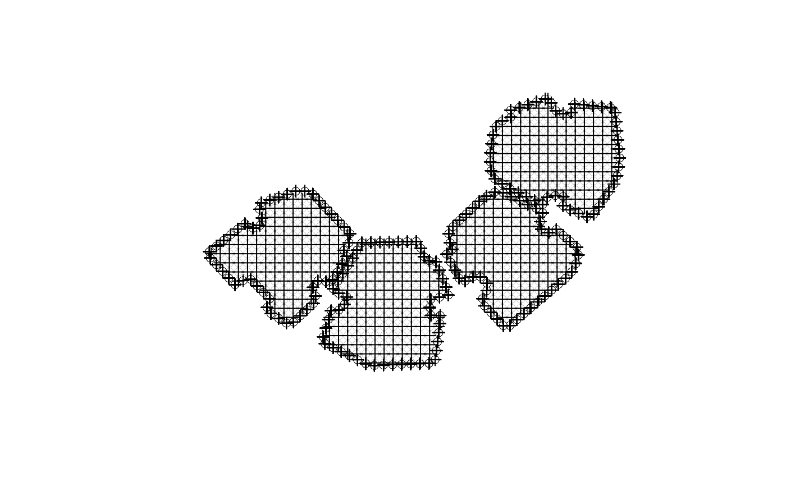
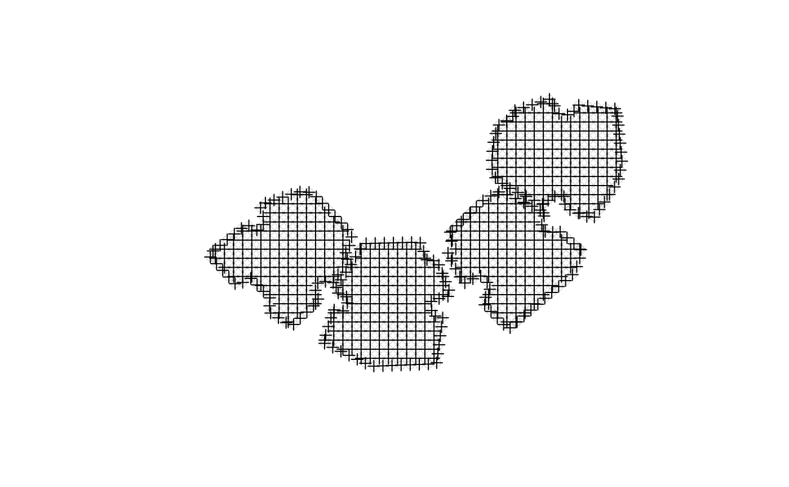
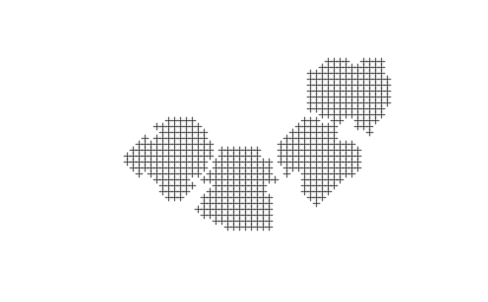

R/surfaceGrid.R
surfaceGrid.RdThe function creates a grid of 3D points covering the given obstacles at specified resolution. Such a grid can later on be used to quantify the shaded / non-shaded proportion of the obstacles surface area.
surfaceGrid(obstacles, obstacles_height_field, res, offset = 0.01)A SpatialPolygonsDataFrame object specifying the obstacles outline
Name of attribute in obstacles with extrusion height for each feature
Required grid resolution, in CRS units
Offset between grid points and facade (horizontal distance) or between grid points and roof (vertical distance).
A 3D SpatialPointsDataFrame layer, including all attributes of the original obstacles each surface point corresponds to, followed by six new attributes:
obs_id Unique consecutive ID for each feature in obstacles
type Either "facade" or "roof"
seg_id Unique consecutive ID for each facade segment (only for 'facade' points)
xy_id Unique consecutive ID for each ground location (only for 'facade' points)
facade_az The azimuth of the corresponding facade, in decimal degrees (only for 'facade' points)
The reason for introducing an offset is to avoid ambiguity as for whether the grid points are "inside" or "outside" of the obstacle. With an offset all grid points are "outside" of the building and thus not intersecting it. offset should be given in CRS units; default is 0.01.
Function plotGrid to visualize grid.
grid = surfaceGrid(
obstacles = build,
obstacles_height_field = "BLDG_HT",
res = 2
)
plot(grid)
plot(grid, pch = 1, lwd = 0.1, col = "black", add = TRUE)

# When 'res/2' is larger then height, facade will be left unsampled
build_small = build
build_small$BLDG_HT = 1
grid = surfaceGrid(
obstacles = build_small,
obstacles_height_field = "BLDG_HT",
res = 2
)
plot(grid)
plot(grid, pch = 1, lwd = 0.1, col = "black", add = TRUE)

table(grid$type)
#>
#> facade roof
#> 201 526
grid = surfaceGrid(
obstacles = build_small,
obstacles_height_field = "BLDG_HT",
res = 2.00001 # res/2 > h
)
plot(grid)
plot(grid, pch = 1, lwd = 0.1, col = "black", add = TRUE)

table(grid$type)
#>
#> roof
#> 537
# When input already contains 'obs_id', 'type', 'seg_id', 'xy_id', 'facade_az' or 'ZZZ'
build2 = build
build2$ZZZ = 1
grid = surfaceGrid(
obstacles = build2,
obstacles_height_field = "BLDG_HT",
res = 2
)
#> Warning: 'ZZZ' column removed from 'obstacles' since it is a reserved column name